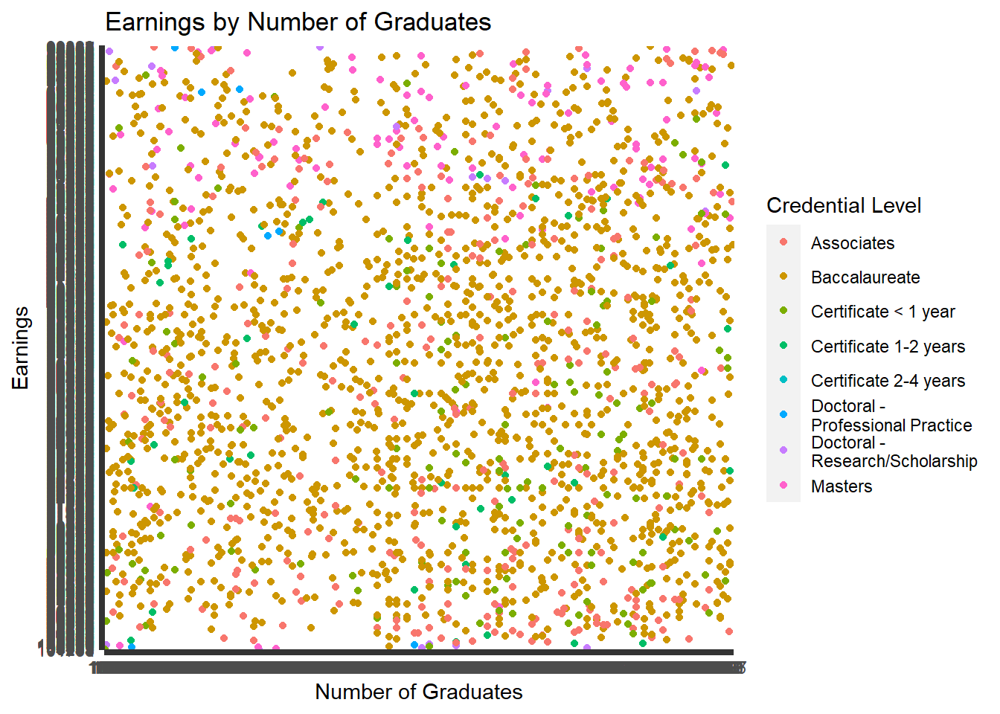
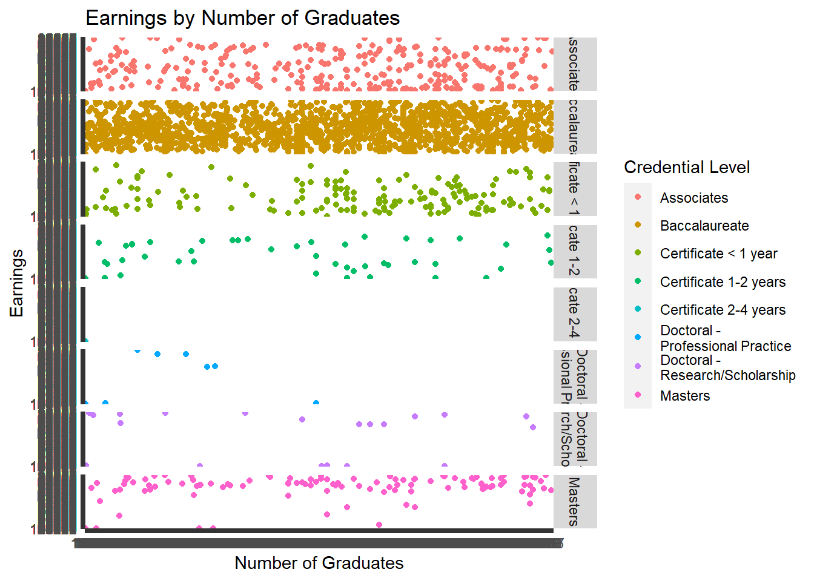
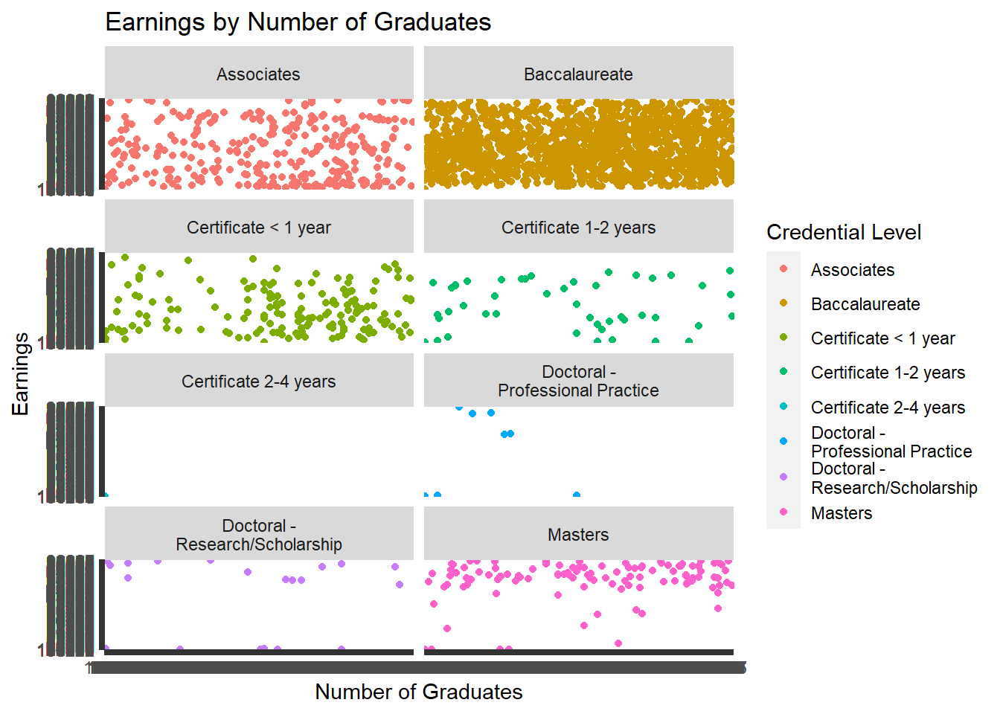
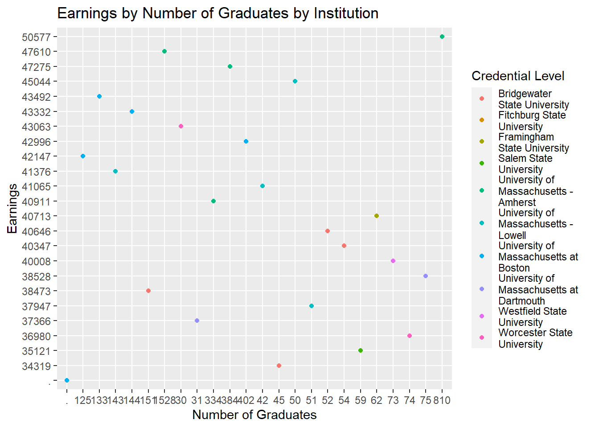
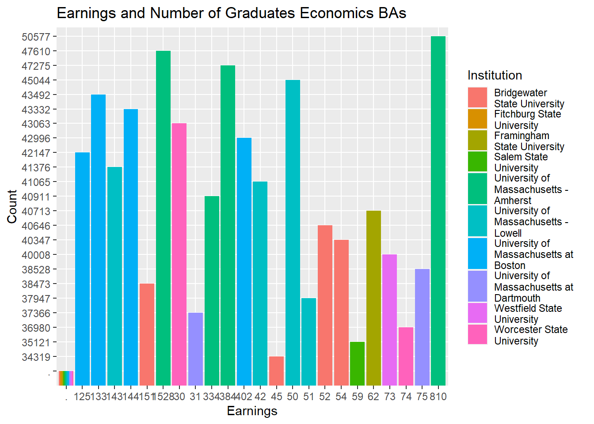
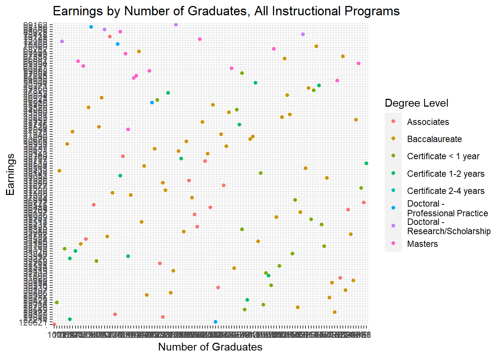
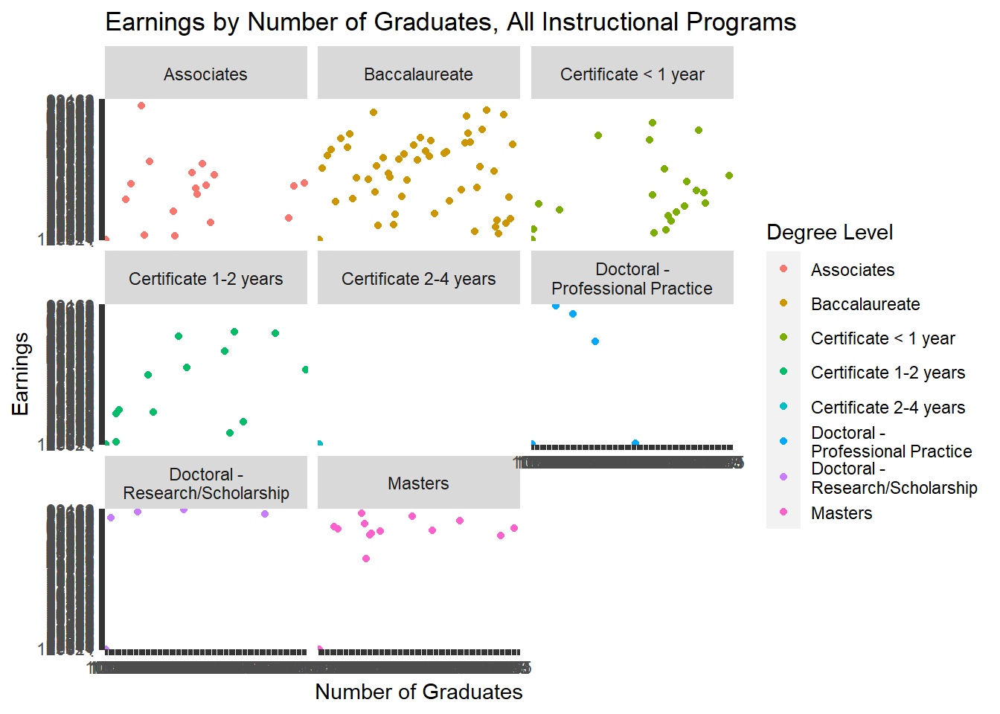
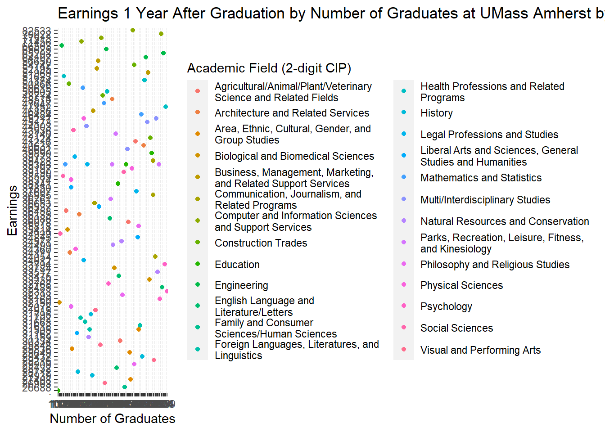
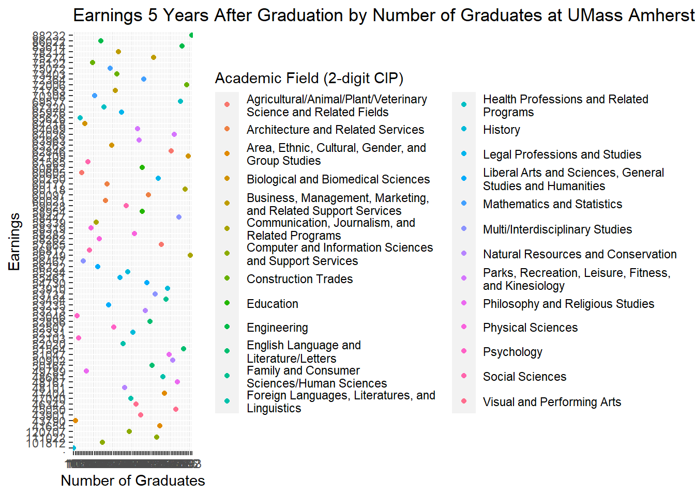
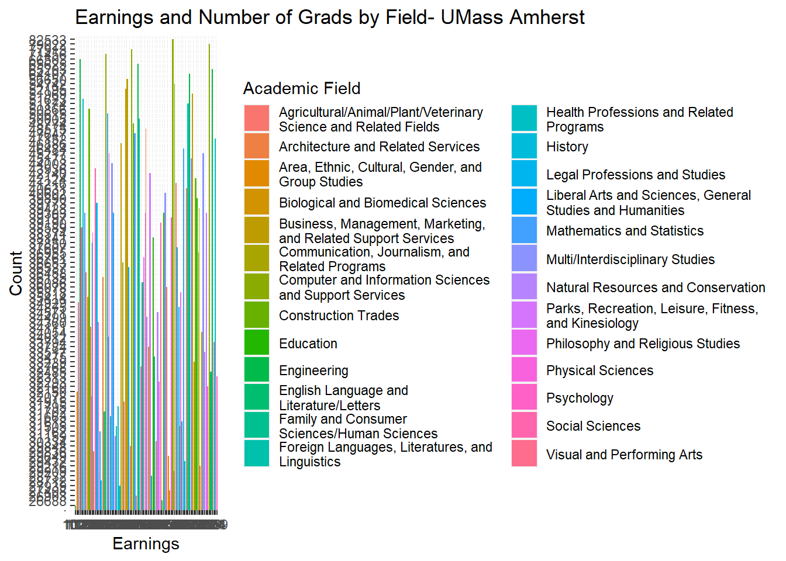

Warning: package 'readxl' was built under R version 4.1.3
Code
library(tidyverse)
Warning: package 'tidyverse' was built under R version 4.1.3
Warning: package 'ggplot2' was built under R version 4.1.3
Warning: package 'tibble' was built under R version 4.1.3
Warning: package 'tidyr' was built under R version 4.1.3
Warning: package 'readr' was built under R version 4.1.3
Warning: package 'purrr' was built under R version 4.1.3
Warning: package 'dplyr' was built under R version 4.1.3
Warning: package 'stringr' was built under R version 4.1.3
Warning: package 'forcats' was built under R version 4.1.3
Warning: package 'lubridate' was built under R version 4.1.3
-- Attaching core tidyverse packages ------------------------ tidyverse 2.0.0 --
v dplyr 1.1.2 v readr 2.1.4
v forcats 1.0.0 v stringr 1.5.0
v ggplot2 3.4.2 v tibble 3.2.1
v lubridate 1.9.2 v tidyr 1.3.0
v purrr 1.0.1
-- Conflicts ------------------------------------------ tidyverse_conflicts() --
x dplyr::filter() masks stats::filter()
x dplyr::lag() masks stats::lag()
i Use the conflicted package (<http://conflicted.r-lib.org/>) to force all conflicts to become errors
# A tibble: 12,639 x 48
agg_level_pseo label_agg_level_pseo inst_level label_inst_level institution
<dbl> <chr> <chr> <chr> <chr>
1 38 "Degree Level *\r\nIn~ I Institution 00216100
2 38 "Degree Level *\r\nIn~ I Institution 00216100
3 38 "Degree Level *\r\nIn~ I Institution 00216100
4 38 "Degree Level *\r\nIn~ I Institution 00216100
5 38 "Degree Level *\r\nIn~ I Institution 00216100
6 38 "Degree Level *\r\nIn~ I Institution 00216100
7 38 "Degree Level *\r\nIn~ I Institution 00216700
8 38 "Degree Level *\r\nIn~ I Institution 00216700
9 38 "Degree Level *\r\nIn~ I Institution 00216700
10 38 "Degree Level *\r\nIn~ I Institution 00216800
# i 12,629 more rows
# i 43 more variables: label_institution <chr>,
# `Degree\r\nAward\r\nLevel` <chr>, label_degree_level <chr>,
# cip_level <chr>, label_cip_level <chr>, cipcode <chr>, label_cipcode <chr>,
# grad_cohort <chr>, label_grad_cohort <chr>, grad_cohort_years <chr>,
# label_grad_cohort_years <chr>, geo_level <chr>, label_geo_level <chr>,
# geography <chr>, label_geography <chr>, ind_level <chr>, ...
Code
View(pseo_ma_SANDBOX)
Commentary
For Homework 2, I used the Census Bureau Post-Secondary Employment Outcomes (PSEO) database filtered for Massachusetts. This database cites the employment outcomes (earnings 1, 5 and 10 years after graduation) for all public Massachusetts higher education institutions. The data set provides postsecondary employment outcomes for graduates at all credential levels, from certificate to doctorate. ## Potential Research Questions: What is the relationship between credential level and earnings? Do earnings grow over time? Questions for further research: What is the relationship between race/ethnicity, age, Pell status and earnings? ## Notes on Code The mean for all graduates for 1 year after graduation was 41256, with the median lower at 36197, demonstrating a skewed left distribution. The mean for all graduates five years after graduation 57654, while the median was 53678, again skewed left distribution. The mean of the 1st year after graduation data for Baccalaureates was 39966, while the median was 36050. This reveals to me that the data were skewed to the left with more observations towards the beginning of the number line. For the mean of the 5th year after graduation for Baccalaureates, mean at 58696 again was higher than the median 54870, again representing a left skew of the data. The minimum of the Baccalaureate earnings the first year after graduation was low at 19825, while the Baccalaureate maximum was at 110317. The minimum of the Baccalaureate earnings the fifth year after graduation were much higher at 29649 and the maximum at 120707. The minimum and maximum for the entire sample the first year after graduation were 19766 and 147728 respectively. Conversely, the minimum and maximum for fifth year earnings were 28528 and 189604 respectively. This represents that earnings increased the longer the time elapsed since graduation as well as by credential level. In addition, numerous visualizations on the data confirm patterns about the relationship between credential, institution and academic field. It is notable from the visualizations that higher credentials generally led to higher earnings, and that the scientific and professional fields were demonstrated to be more lucrative. Additional review of Economics Bachelor’s graduates showed that earnings were highest among UMass Amherst grads and ranged from around $30k to around $50k. There were 12639 rows and 48 columns in the dataset.
## Data Wrangling
::: {.cell}
```{.r .cell-code}
#list the unique degree levels
unique(pseo_ma_SANDBOX$label_degree_level)
#convert to numeric
pseo_ma_SANDBOX_num <- pseo_ma_SANDBOX
y1_num<- as.numeric(pseo_ma_SANDBOX$y1_p50_earnings)
#find summary statistics on whole data set, 1 year after graduation
pseo_ma_SANDBOX_num
summary(y1_num, na.rm=T)
#find summary statistics on whole data set, 5 years after graduation
y5_num<-as.numeric(pseo_ma_SANDBOX$y5_p50_earnings)
summary(y5_num, na.rm=T)
#find the number of rows and columns in the dataset
nrow(pseo_ma_SANDBOX)
ncol(pseo_ma_SANDBOX)
#find summary statistics of filtered data-- just BA degrees
pseo_filtered <-filter(pseo_ma_SANDBOX, pseo_ma_SANDBOX$label_degree_level=="Baccalaureate")
pseo_filtered_five <- subset(pseo_filtered, pseo_filtered$label_cipcode!="All Instructional Programs")
y1a_num<- as.numeric(pseo_filtered_five$y1_p50_earnings)
y1a_num %>% summary(y1_p50_earnings, na.rm=TRUE)
y5a_num <- as.numeric(pseo_filtered_five$y5_p50_earnings)
y5a_num %>% summary(y5_p50_earnings, na.rm=TRUE)
``
view(pseo_ma_SANDBOX)
# filter data for all instructional programs to get an overview
library(dplyr)
pseo_filtered_two <-filter(pseo_ma_SANDBOX, pseo_ma_SANDBOX$label_cipcode=="All Instructional Programs")`
#NEED HELP
#pseo_ma_SANDBOX %>%
# group_by(pseo_ma_SANDBOX$label_degree_level) %>%
# summarise(Mean=mean(y1_num, na.rm=T))
Error: attempt to use zero-length variable name
:::
Visualization Code
Code
library(tidyverse)library(ggplot2)View(pseo_ma_SANDBOX)pseo_viz <- pseo_ma_SANDBOX#y1a_num_1<- as.numeric(pseo_viz$y1_grads_earn)#y1_num <-as.numeric(pseo_viz$y1_p50_earnings)# Scatterplot of Year 1 earnings by credential level and number of graduates, all institutionsvis_500 <-ggplot(pseo_viz, aes(x=y1_grads_earn, y=y1_p50_earnings, color=label_degree_level)) +geom_point() +labs(y="Earnings", x="Number of Graduates", color="Credential Level", title ="Earnings by Number of Graduates")print(vis_500)

Code
# facet grid of scatterplotvis_500 +facet_grid(label_degree_level ~ .)

Code
# facet grid with spacing of scatterplotvis_500 +facet_wrap( ~ label_degree_level, ncol=2)

Code
#filter for Baccalaureate Economics degreeslibrary(dplyr)pseo_filtered <-filter(pseo_ma_SANDBOX, pseo_ma_SANDBOX$label_degree_level=="Baccalaureate"& pseo_ma_SANDBOX$label_cipcode=="Economics")View(pseo_filtered)# scatterplot of Bachelors in Economics, all institutionsvis_600 <-ggplot(pseo_filtered, aes(x=y1_grads_earn, y=y1_p50_earnings, color=label_institution)) +geom_point() +labs(y="Earnings", x="Number of Graduates", color="Credential Level", title ="Earnings by Number of Graduates by Institution")print(vis_600)

Code
# bar graph of Economics BAs 1 year earnings by institutionvis_900 <-ggplot(data = pseo_filtered, mapping =aes(x=y1_grads_earn, y=y1_p50_earnings, fill=label_institution)) +geom_bar(stat="identity", position ="dodge") +labs(x="Earnings", y="Count", fill="Institution", title="Earnings and Number of Graduates Economics BAs")print(vis_900)

Code
#Scatterplot of year 1 earnings, all instructional programs, by degree levelpseo_filtered_two <-filter(pseo_ma_SANDBOX, pseo_ma_SANDBOX$label_cipcode=="All Instructional Programs")View(pseo_filtered_two)vis_550 <-ggplot(pseo_filtered_two, aes(x=y1_grads_earn, y=y1_p50_earnings, color=label_degree_level)) +geom_point() +labs(y="Earnings", x="Number of Graduates", color="Degree Level", title ="Earnings by Number of Graduates, All Instructional Programs")print(vis_550)

Code
# Facet wrap of all instructional programsvis_550 +facet_wrap( ~ label_degree_level, ncol=3)

Code
# 1 year earnings for BAs by 2-digit CIP Code at UMass Amherst- Scatterplotlibrary(dplyr)pseo_filtered_three <-filter(pseo_ma_SANDBOX, pseo_ma_SANDBOX$institution=="00222100"& pseo_ma_SANDBOX$label_degree_level=="Baccalaureate"& pseo_ma_SANDBOX$cip_level=="2")View(pseo_filtered_three)vis_650 <-ggplot(pseo_filtered_three, aes(x=y1_grads_earn, y=y1_p50_earnings, color=label_cipcode)) +geom_point() +labs(y="Earnings", x="Number of Graduates", color="Academic Field (2-digit CIP)", title ="Earnings 1 Year After Graduation by Number of Graduates at UMass Amherst by Academic Field")print(vis_650)

Code
#Year 5 Earnings for UMass Amherst by CIP Code BAvis_700 <-ggplot(pseo_filtered_three, aes(x=y5_grads_earn, y=y5_p50_earnings, color=label_cipcode)) +geom_point() +labs(y="Earnings", x="Number of Graduates", color="Academic Field (2-digit CIP)", title ="Earnings 5 Years After Graduation by Number of Graduates at UMass Amherst by Academic Field")print(vis_700)

Code
#Dodge by 2-digit CIP UMass Amherst BAvis_950 <-ggplot(data = pseo_filtered_three, mapping =aes(x=y1_grads_earn, y=y1_p50_earnings, fill=label_cipcode)) +geom_bar(stat="identity", position ="dodge") +labs(x="Earnings", y="Count", fill="Academic Field", title="Earnings and Number of Grads by Field- UMass Amherst")print(vis_950)

Code
# Facet wrap of all instructional programsvis_550 +facet_wrap( ~ label_degree_level, ncol=3)
Source Code
---title: "Homework 3"author: "Moira Chiong"description: "Exploratory Data Analysis"date: "6/12/2023"format: html: toc: true code-fold: true code-copy: true code-tools: true---## Read in Data```{r}setwd("C:/Users/chion/OneDrive/Desktop/DACSS 601/DACSS_601_Summer2023_Sec1/posts")library(readxl)library(tidyverse)library(dplyr)library(ggplot2)pseo_ma_SANDBOX <-read_excel("datafolderMoiraChiong/pseo_ma_SANDBOX.xlsx")pseo_ma_SANDBOXView(pseo_ma_SANDBOX)```## CommentaryFor Homework 2, I used the Census Bureau Post-Secondary Employment Outcomes (PSEO) database filtered for Massachusetts. This database cites the employment outcomes (earnings 1, 5 and 10 years after graduation) for all public Massachusetts higher education institutions. The data set provides postsecondary employment outcomes for graduates at all credential levels, from certificate to doctorate.## Potential Research Questions:What is the relationship between credential level and earnings? Do earnings grow over time?Questions for further research: What is the relationship between race/ethnicity, age, Pell status and earnings?## Notes on CodeThe mean for all graduates for 1 year after graduation was 41256, with the median lower at 36197, demonstrating a skewed left distribution. The mean for all graduates five years after graduation 57654, while the median was 53678, again skewed left distribution. The mean of the 1st year after graduation data for Baccalaureates was 39966, while the median was 36050. This reveals to me that the data were skewed to the left with more observations towards the beginning of the number line. For the mean of the 5th year after graduation for Baccalaureates, mean at 58696 again was higher than the median 54870, again representing a left skew of the data. The minimum of the Baccalaureate earnings the first year after graduation was low at 19825, while the Baccalaureate maximum was at 110317. The minimum of the Baccalaureate earnings the fifth year after graduation were much higher at 29649 and the maximum at 120707. The minimum and maximum for the entire sample the first year after graduation were 19766 and 147728 respectively. Conversely, the minimum and maximum for fifth year earnings were 28528 and 189604 respectively. This represents that earnings increased the longer the time elapsed since graduation as well as by credential level.In addition, numerous visualizations on the data confirm patterns about the relationship between credential, institution and academic field. It is notable from the visualizations that higher credentials generally led to higher earnings, and that the scientific and professional fields were demonstrated to be more lucrative. Additional review of Economics Bachelor's graduates showed that earnings were highest among UMass Amherst grads and ranged from around $30k to around $50k.There were 12639 rows and 48 columns in the dataset.```## Data Wrangling```{r}#list the unique degree levelsunique(pseo_ma_SANDBOX$label_degree_level)#convert to numericpseo_ma_SANDBOX_num <- pseo_ma_SANDBOXy1_num<- as.numeric(pseo_ma_SANDBOX$y1_p50_earnings)#find summary statistics on whole data set, 1 year after graduationpseo_ma_SANDBOX_numsummary(y1_num, na.rm=T)#find summary statistics on whole data set, 5 years after graduationy5_num<-as.numeric(pseo_ma_SANDBOX$y5_p50_earnings)summary(y5_num, na.rm=T)#find the number of rows and columns in the datasetnrow(pseo_ma_SANDBOX)ncol(pseo_ma_SANDBOX)#find summary statistics of filtered data-- just BA degreespseo_filtered <-filter(pseo_ma_SANDBOX, pseo_ma_SANDBOX$label_degree_level=="Baccalaureate")pseo_filtered_five <- subset(pseo_filtered, pseo_filtered$label_cipcode!="All Instructional Programs")y1a_num<- as.numeric(pseo_filtered_five$y1_p50_earnings)y1a_num %>% summary(y1_p50_earnings, na.rm=TRUE)y5a_num <- as.numeric(pseo_filtered_five$y5_p50_earnings)y5a_num %>% summary(y5_p50_earnings, na.rm=TRUE)``view(pseo_ma_SANDBOX)# filter data for all instructional programs to get an overviewlibrary(dplyr)pseo_filtered_two <-filter(pseo_ma_SANDBOX, pseo_ma_SANDBOX$label_cipcode=="All Instructional Programs")`#NEED HELP#pseo_ma_SANDBOX %>%# group_by(pseo_ma_SANDBOX$label_degree_level) %>%# summarise(Mean=mean(y1_num, na.rm=T))```## Visualization Code```{r}library(tidyverse)library(ggplot2)View(pseo_ma_SANDBOX)pseo_viz <- pseo_ma_SANDBOX#y1a_num_1<- as.numeric(pseo_viz$y1_grads_earn)#y1_num <-as.numeric(pseo_viz$y1_p50_earnings)# Scatterplot of Year 1 earnings by credential level and number of graduates, all institutionsvis_500 <-ggplot(pseo_viz, aes(x=y1_grads_earn, y=y1_p50_earnings, color=label_degree_level)) +geom_point() +labs(y="Earnings", x="Number of Graduates", color="Credential Level", title ="Earnings by Number of Graduates")print(vis_500)# facet grid of scatterplotvis_500 +facet_grid(label_degree_level ~ .)# facet grid with spacing of scatterplotvis_500 +facet_wrap( ~ label_degree_level, ncol=2)#filter for Baccalaureate Economics degreeslibrary(dplyr)pseo_filtered <-filter(pseo_ma_SANDBOX, pseo_ma_SANDBOX$label_degree_level=="Baccalaureate"& pseo_ma_SANDBOX$label_cipcode=="Economics")View(pseo_filtered)# scatterplot of Bachelors in Economics, all institutionsvis_600 <-ggplot(pseo_filtered, aes(x=y1_grads_earn, y=y1_p50_earnings, color=label_institution)) +geom_point() +labs(y="Earnings", x="Number of Graduates", color="Credential Level", title ="Earnings by Number of Graduates by Institution")print(vis_600)# bar graph of Economics BAs 1 year earnings by institutionvis_900 <-ggplot(data = pseo_filtered, mapping =aes(x=y1_grads_earn, y=y1_p50_earnings, fill=label_institution)) +geom_bar(stat="identity", position ="dodge") +labs(x="Earnings", y="Count", fill="Institution", title="Earnings and Number of Graduates Economics BAs")print(vis_900)#Scatterplot of year 1 earnings, all instructional programs, by degree levelpseo_filtered_two <-filter(pseo_ma_SANDBOX, pseo_ma_SANDBOX$label_cipcode=="All Instructional Programs")View(pseo_filtered_two)vis_550 <-ggplot(pseo_filtered_two, aes(x=y1_grads_earn, y=y1_p50_earnings, color=label_degree_level)) +geom_point() +labs(y="Earnings", x="Number of Graduates", color="Degree Level", title ="Earnings by Number of Graduates, All Instructional Programs")print(vis_550)# Facet wrap of all instructional programsvis_550 +facet_wrap( ~ label_degree_level, ncol=3)# 1 year earnings for BAs by 2-digit CIP Code at UMass Amherst- Scatterplotlibrary(dplyr)pseo_filtered_three <-filter(pseo_ma_SANDBOX, pseo_ma_SANDBOX$institution=="00222100"& pseo_ma_SANDBOX$label_degree_level=="Baccalaureate"& pseo_ma_SANDBOX$cip_level=="2")View(pseo_filtered_three)vis_650 <-ggplot(pseo_filtered_three, aes(x=y1_grads_earn, y=y1_p50_earnings, color=label_cipcode)) +geom_point() +labs(y="Earnings", x="Number of Graduates", color="Academic Field (2-digit CIP)", title ="Earnings 1 Year After Graduation by Number of Graduates at UMass Amherst by Academic Field")print(vis_650)#Year 5 Earnings for UMass Amherst by CIP Code BAvis_700 <-ggplot(pseo_filtered_three, aes(x=y5_grads_earn, y=y5_p50_earnings, color=label_cipcode)) +geom_point() +labs(y="Earnings", x="Number of Graduates", color="Academic Field (2-digit CIP)", title ="Earnings 5 Years After Graduation by Number of Graduates at UMass Amherst by Academic Field")print(vis_700)#Dodge by 2-digit CIP UMass Amherst BAvis_950 <-ggplot(data = pseo_filtered_three, mapping =aes(x=y1_grads_earn, y=y1_p50_earnings, fill=label_cipcode)) +geom_bar(stat="identity", position ="dodge") +labs(x="Earnings", y="Count", fill="Academic Field", title="Earnings and Number of Grads by Field- UMass Amherst")print(vis_950)# Facet wrap of all instructional programsvis_550 +facet_wrap( ~ label_degree_level, ncol=3)```